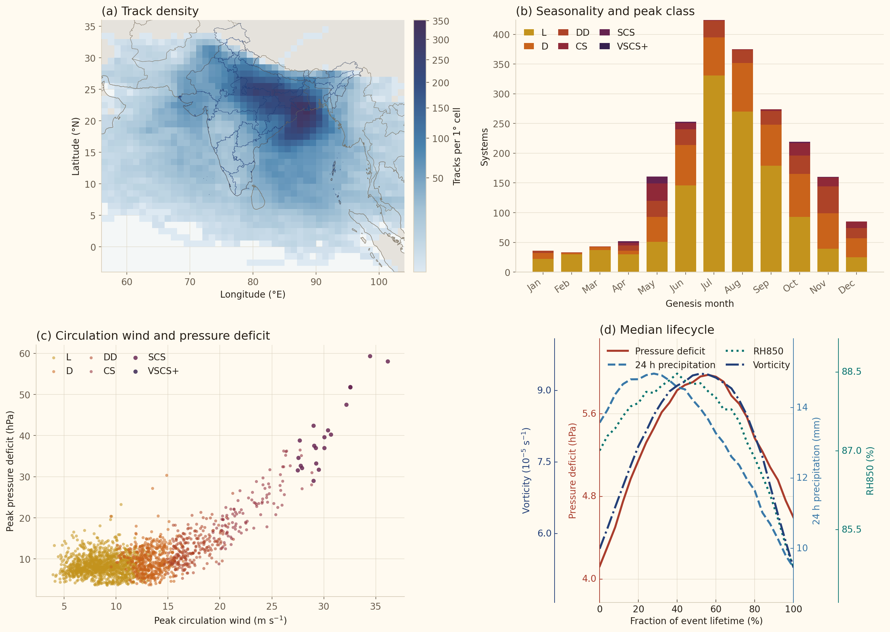

Time and climate (MJO, BSISO, ENSO), IBTrACS and location
Months
Atlas-derived peak class
Climate at genesis
Catalogue association
Endpoint geography
Catalogue percentiles
Coloured marks show models with output valid on each date.
Forecast tracks and weather
Storm evolution
System explorer
Tracks and density
The map shows the current filtered subset. Density counts each track at most once per half-degree cell. Individual systems use a uniform track style throughout.
State rainfall values
Selected-system evolution
Trailing 24 h rainfall is shown as bars unless selected as the line variable. Drag the dashed marker to move map and weather time.
Select a system to inspect its hourly evolution.
Accessible selected-system values
Storm-centred composites
Every contributing track centre is translated to relative longitude 0°, relative latitude 0°; north remains up.
Precipitation footprint
Select a system to load its precipitation footprint.
Vertical structure at 0° relative latitude
Select a system to load its vertical structure.
Subset evolution
Coloured line: subset mean; shading: subset IQR. Dotted line: mean across the complete catalogue. Each system contributes once per life-fraction bin; each y-axis fits the two means and plotted IQR rather than forcing zero.
Physical variables3 shown
Accessible subset summary
Climatology
Frequency, timing, movement, climate context and storm-centred structure for the shared filtered subset.
Annual selected-system frequency
Annual values and centred 11-year mean; years without complete selected-month exposure are excluded.
Accessible annual data
Seasonal cycle and class mix
Each system contributes according to the shared active, genesis or peak-month definition.
Accessible monthly data
Atlas-derived class by decade
Annualised within each exposed decade; category 6 means VSCS or stronger.
Accessible class data
Track density
Unique tracks per half-degree cell for the selected months; colour intensity uses a square-root count scale.
Genesis-to-lysis pathways
Rows are genesis regions; columns are lysis regions. Each row totals 100%.
Accessible pathway data
Climate-state composition
Share of LPS genesis by climate category, compared with all LPSs in the selected time and months.
Accessible climate composition
Current filtered subset
Open this tab to load subset composites.
Complete catalogue reference
Reference composite pending.
Composite method and provenance
Climate change
Like-for-like LPS tracking in CMIP6 historical and future integrations.
Annual comparison
Each line shows successive years within its 30-year window.
Genesis seasonal cycle
Mean systems per year by genesis month.
Peak-class mix
Share of systems in each atlas-derived peak class.
Track-density change
Unique tracks per 1° cell per year; systems are grouped by genesis season.
Historical
Future
Future − historical
Catalogue diagnostic extremes
Rankings, distributions, relationships and timing within the ERA5-derived catalogue—not authoritative meteorological records.
Distribution
Filtered-subset distribution with the selected system marked when applicable.
Distribution summary
Distribution by peak class
Boxes show the interquartile range; whiskers show the 5th–95th percentiles.
Class distribution summary
Compound relationship
Every point is a physical event; click a point to open that system.
Move over a point for its system and values.
Timing of the most extreme decile
Genesis month by peak class for the strongest 10% of the filtered subset under the selected ranking direction.
Extreme timing data
Data and definitions

Catalogue
LPS v5.6 contains loading hourly positions grouped into loading calibrated physical events across all calendar months. Every event is continuous at hourly resolution.
Coverage
Scope
Positions, classifications and diagnostics are ERA5-derived.
Identity and physics
track_id is the single public physical-event identifier used for plotting, counts, matching and climatology. Internal linker, family and compatibility identifiers are omitted from the public files.
Map convention
Each event is drawn as one uniform track. ERA5 physics is independently re-sampled at every observed or supported interpolated centre.
Metric definitions
- Peak ERA5 class: persistent six-hour class from the background-removed circulation wind, with a land-only depression floor requiring at least 95% land fraction, two actual closed 2-hPa isobars and 17 kt circulation wind; it is not an official agency classification. DD and stronger classes remain wind-classified. CS means Cyclonic Storm, not Saffir–Simpson Category 1.
- Circulation wind: 95th-percentile 10-m wind anomaly within 125 km after subtracting the mean 300–500 km background vector, m s⁻¹.
- Pressure deficit: environmental ring pressure minus local minimum MSLP, hPa.
- Closed isobars: successive geometrically closed standard 2-hPa ERA5 MSLP contours enclosing the final-centre pressure minimum in a 10° analysis window; this replaces the old pressure-depth proxy.
- MSLP depth: percentile ranking based on minimum mean sea-level pressure; lower pressure ranks stronger.
- Smoothed vorticity: centre diagnostic in 10⁻⁵ s⁻¹.
- 24 h precipitation: trailing track-centred catalogue diagnostic, mm; precipitation does not select or classify v5.6 events.
- Percentiles: fixed across the full v5.6 physical-event catalogue and independently combinable; filters do not rescale them.
Climate filters
BSISO uses the APCC BSISO-1 index on each system’s genesis day during May–October; amplitude below 1 is inactive, while dates outside the season or before the index begins are explicitly unavailable. MJO uses the Australian Bureau of Meteorology all-season Wheeler–Hendon RMM index on each system’s genesis day; amplitude below 1 is inactive, while pre-index and missing values are explicitly unavailable. ENSO uses the NOAA CPC three-month Oceanic Niño Index centred on the genesis month: La Niña at ≤ −0.5 °C, neutral between −0.5 and 0.5 °C, and El Niño at ≥ 0.5 °C. These are genesis-time categories, not a claim that the system was caused by that background state or an official five-season ENSO episode classification.
Weather fields
The map offers positive ERA5 850-hPa vorticity and trailing 24 h accumulated precipitation at 0.25°, plus 500-hPa relative humidity at 1°. Precipitation uses a terrain-inspired kiwi–mango–berry ramp, with near-zero amounts transparent. RH500 is derived from 3-hourly ERA5 temperature and specific humidity using mixed-phase saturation vapour pressure, then interpolated to the hourly slider.
Genesis and lysis regions
Genesis uses the first published centre and lysis the last. Indian land means the endpoint lies inside an atlas state/UT polygon; All land uses the Natural Earth land mask and therefore includes Indian land. Bay of Bengal and Arabian Sea require a water endpoint in 0–30°N and 45–100°E, split at 77.5°E. Indian Ocean means any water endpoint in 30°S–30°N, 30–120°E and includes those two named seas. These are transparent atlas analysis regions rather than official basin classifications.
IBTrACS names
Named systems use NOAA IBTrACS v04r01 North Indian and Western Pacific best tracks. Matches use observed track points at physical-event grain and require credible time overlap, track separation and ambiguity margin. Unmatched systems use atlas class, genesis year and within-class annual sequence, such as DD 1986 03. IBTrACS is display context only and does not select events.
State rainfall
State fills use IMD 0.25-degree daily gridded rainfall. Each event stores the area-mean daily rainfall averaged over UTC calendar days touched by its track; subset maps weight events by active days. The anomaly option is the fractional anomaly (LPS-period rain ÷ calendar-month-matched climatological daily mean) − 1 for each state/UT, using every available IMD year from 1901–2025. Red is below climatology, white is climatology and blue is above; colours saturate at −1 and +1. Rainfall is a downstream atlas diagnostic and does not affect catalogue membership.
Download and provenance
Exports include v5.6 physical-event IDs, units, filter state, source provenance, state rainfall and complete published-centre physics.
Release record
Full dataset on Zenodo · release manifest and checksums · quality report